Basic plot
r <- cosewic_ranges(bcch)
cosewic_plot(r, title = "Black-capped Chickadee")
#> Zoom: 9
#> Fetching 9 missing tiles
#> | | | 0% | |======== | 11% | |================ | 22% | |======================= | 33% | |=============================== | 44% | |======================================= | 56% | |=============================================== | 67% | |====================================================== | 78% | |============================================================== | 89% | |======================================================================| 100%
#> ...complete!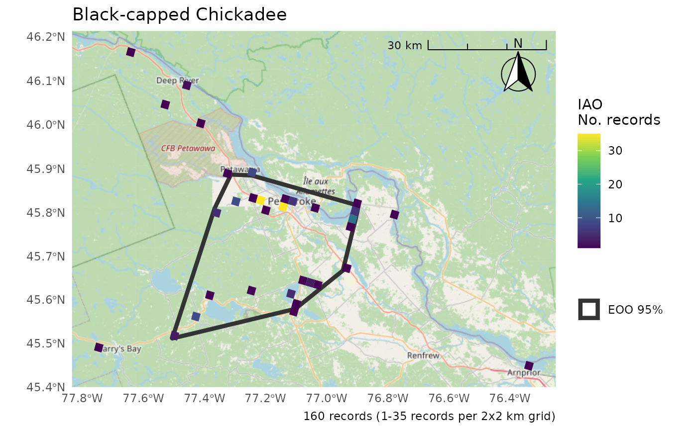
Adding observation points
cosewic_plot(r, points = bcch, title = "Black-capped Chickadee")
#> Zoom: 9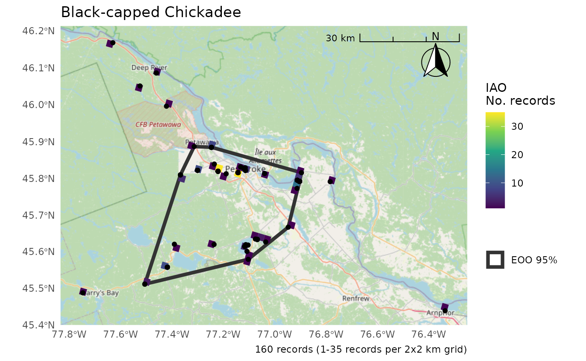
Only EOO or IAO
cosewic_plot(r, which = "eoo", points = bcch)
#> Zoom: 9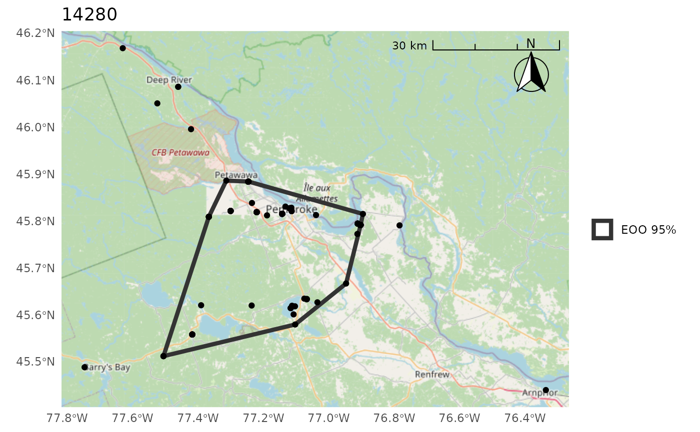
cosewic_plot(r, which = "iao")
#> Zoom: 9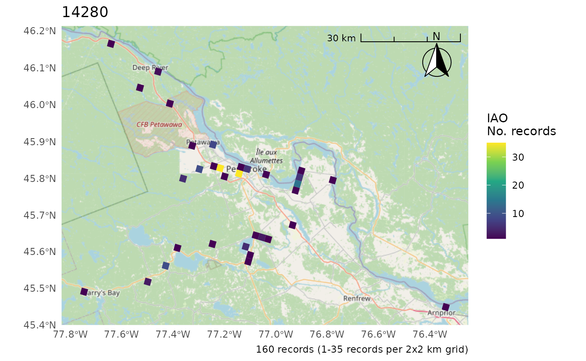
Change the CRS
- Only applies if not using map tiles as they must be in the CRS of the tile (i.e. EPSG:3857 Web Mercator)
cosewic_plot(r, crs = 3347) # No change
#> 'crs' is only applicable when not using map tiles. Map tiles always use CRS of EPSG:3857.
#> Loading required namespace: raster
#> Zoom: 9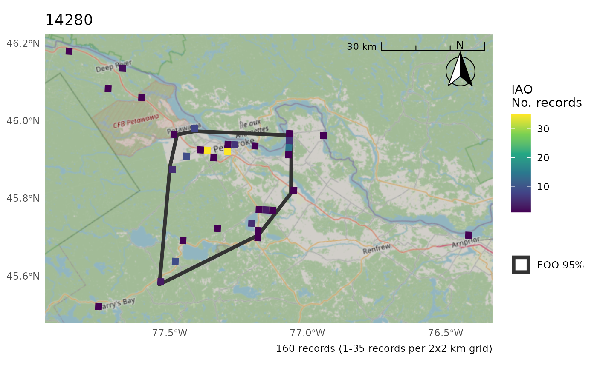
cosewic_plot(r, map = map_canada(), crs = 3347)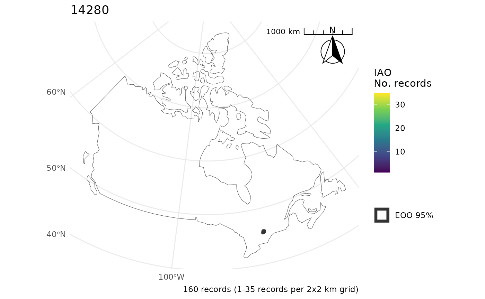
Move the scale/arrow
r <- cosewic_ranges(hofi)
cosewic_plot(r, arrow_location = "br", scale_location = "br")
#> Zoom: 6
#> Fetching 4 missing tiles
#> | | | 0% | |================== | 25% | |=================================== | 50% | |==================================================== | 75% | |======================================================================| 100%
#> ...complete!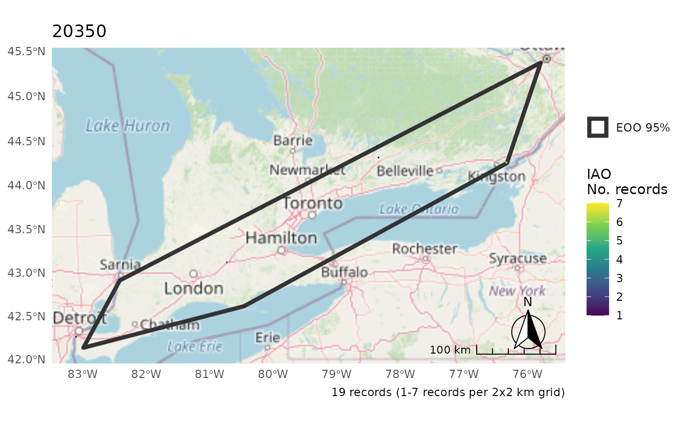
Summarize IAO over larger grid for better visibility
cosewic_plot(
r,
grid = grid_canada(25),
title = "House Finch",
arrow_location = "br",
scale_location = "br"
)
#> Zoom: 6
Plot multiple species as separate plots
m <- rbind(bcch, hofi)
r <- cosewic_ranges(m)
p <- cosewic_plot(
r,
title = c("14280" = "Black-capped chickadees", "20350" = "House Finches")
)
p[[1]]
#> Zoom: 9
p[[2]]
#> Zoom: 6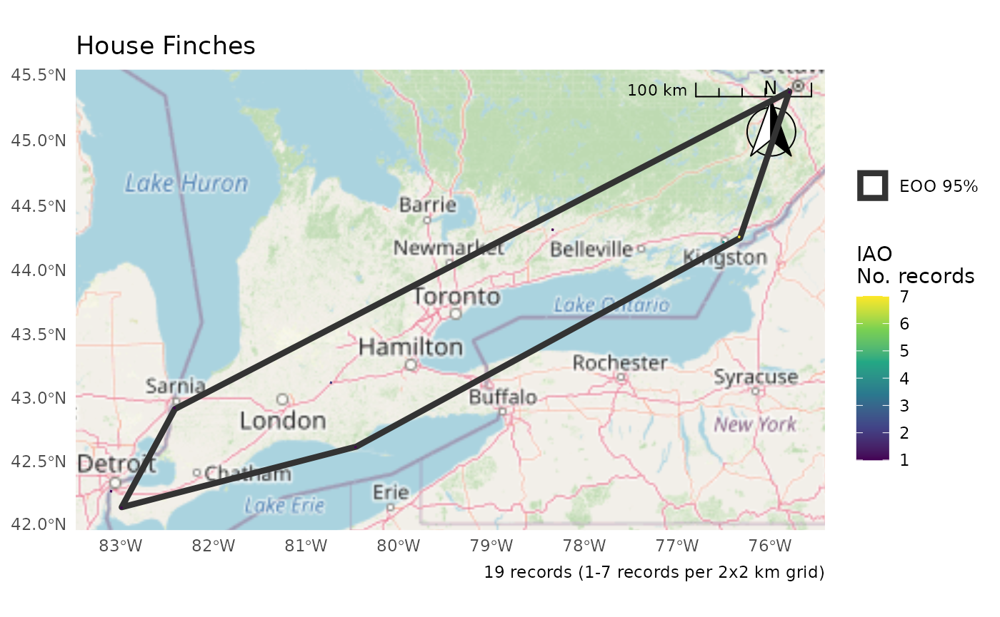
Use patchwork to combine
library(patchwork)
wrap_plots(p) +
plot_layout(guides = "collect")
#> Zoom: 9
#> Zoom: 6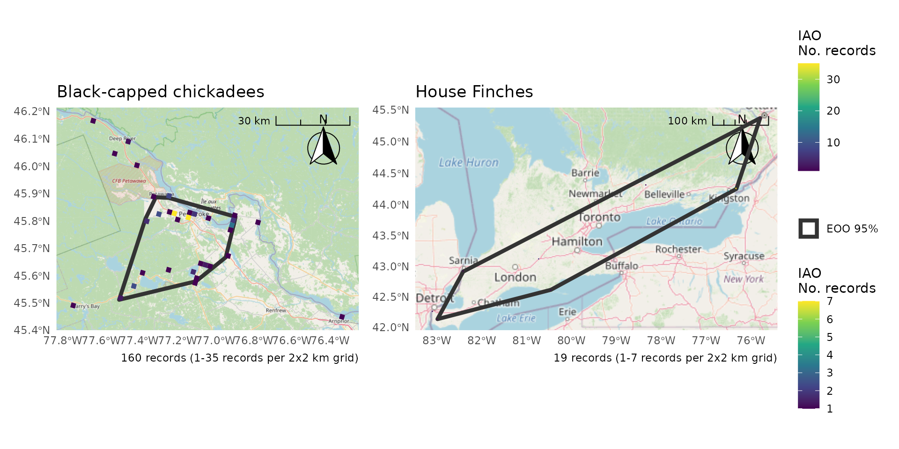
Use IAO as a proportion for better legends
p <- cosewic_plot(
r,
iao_prop = TRUE,
title = c("14280" = "Black-capped chickadees", "20350" = "House Finches")
)
wrap_plots(p) +
plot_layout(guides = "collect")
#> Zoom: 9
#> Zoom: 6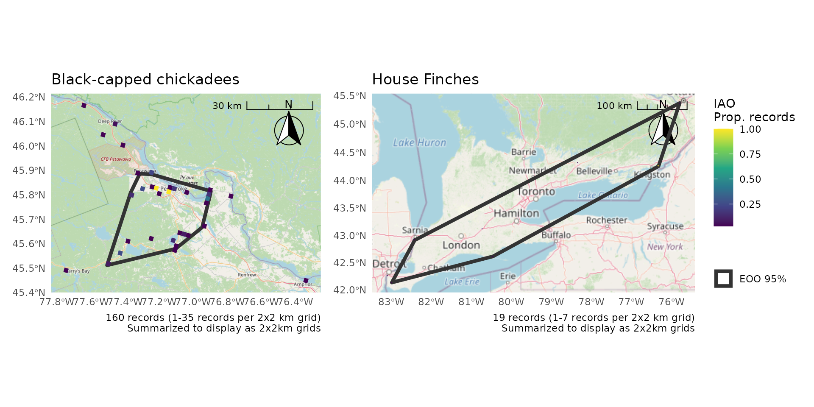
Consider summarizing over a larger IAO grid (10x10km) for better visibility
p <- cosewic_plot(
r,
iao_prop = TRUE,
grid = grid_canada(10),
title = c("14280" = "Black-capped chickadees", "20350" = "House Finches")
)
wrap_plots(p) +
plot_layout(guides = "collect")
#> Zoom: 9
#> Zoom: 6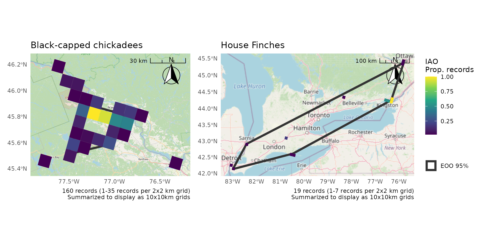
For more nuanced control, create plots separately and then combine
b <- cosewic_ranges(bcch)
h <- cosewic_ranges(hofi)
p1 <- cosewic_plot(b, title = "Black-capped chickadee", iao_prop = TRUE)
p2 <- cosewic_plot(
h,
title = "House Finches",
iao_prop = TRUE,
arrow_location = "br",
scale_location = "br",
grid = grid_canada(25)
)
p1 + p2 + plot_layout(guides = "collect")
#> Zoom: 9
#> Zoom: 6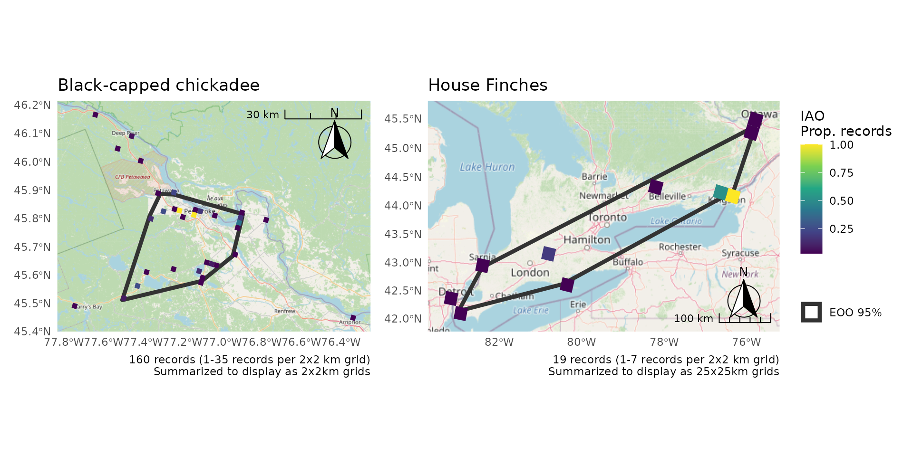
p1 / p2 + plot_layout(guides = "collect")
#> Zoom: 9
#> Zoom: 6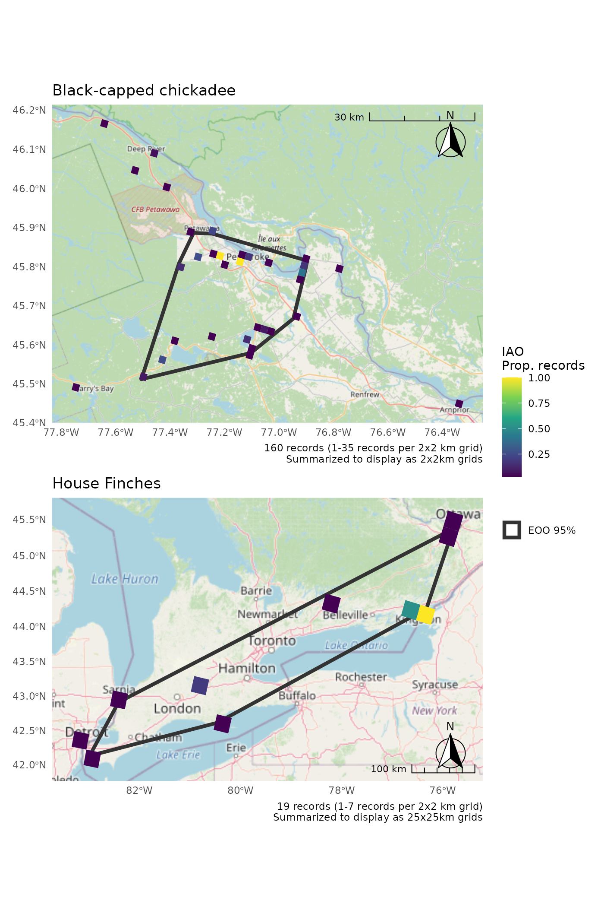